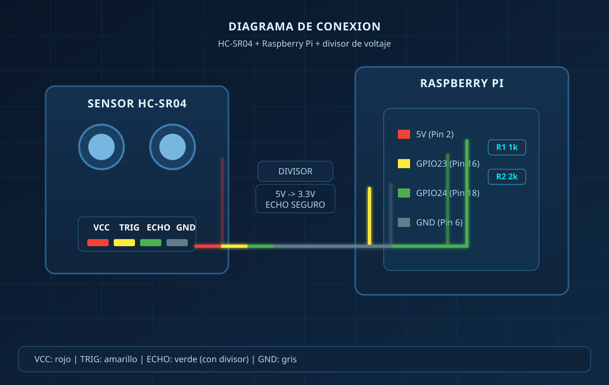

Solución tecnológica para el monitoreo automático del nivel de líquidos almacenados, con visualización en tiempo real.
El medidor inteligente de tinacos y contenedores industriales es una solución tecnológica diseñada para monitorear de manera automática el nivel de líquidos almacenados en tanques.
Este sistema permite conocer en tiempo real la cantidad de agua o líquido disponible sin necesidad de revisar físicamente el contenedor.
Mediante el uso de sensores y dispositivos de comunicación, el sistema recopila información sobre el nivel del líquido y la envía a una plataforma digital donde el usuario puede visualizar los datos de forma clara y sencilla.
Desarrollar un sistema inteligente que permita medir y monitorear el nivel de agua o líquidos en tinacos y contenedores industriales, facilitando el control del consumo, evitando desperdicios y mejorando la administración de los recursos.
El control manual puede ocasionar falta de agua inesperada sin previo aviso al usuario.
Sin monitoreo adecuado, los recursos hídricos se desperdician por falta de control preciso.
Dificultad para monitorear grandes contenedores industriales de forma manual y segura.
En instalaciones industriales, la falta de monitoreo puede generar riesgos operativos y humanos.
El sensor ultrasónico detecta el nivel del líquido dentro del tinaco o contenedor midiendo la distancia a la superficie.
El microcontrolador (Raspberry Pi) procesa la información obtenida por el sensor y calcula el porcentaje de llenado.
Los datos se envían a través del módulo de comunicación a la plataforma digital o aplicación web.
El usuario puede visualizar el nivel del líquido en tiempo real desde su celular o computadora con alertas configurables.
HC-SR04 — Mide la distancia entre el sensor y la superficie del líquido mediante ondas ultrasónicas de alta precisión.
Raspberry Pi — Procesa la información obtenida por el sensor y gestiona la lógica de comunicación del sistema.
Permite enviar los datos procesados a la aplicación web o sistema digital de forma inalámbrica y en tiempo real.
Interfaz web y móvil donde el usuario consulta el nivel del tanque, historial de lecturas y niveles de alerta configurables.

El sensor ultrasónico HC-SR04 se conecta a la Raspberry Pi mediante un divisor de voltaje, asegurando que la señal ECHO (5V) sea reducida a un nivel seguro de 3.3V para el GPIO.
| PIN SENSOR | CONEXIÓN | DESCRIPCIÓN |
|---|---|---|
| VCC | GPIO 5V (Pin 2) | Alimentación del sensor |
| TRIG | GPIO 23 (Pin 16) | Señal de disparo |
| ECHO | GPIO 24 (Pin 18) | Señal de retorno (con div. voltaje) |
| GND | GPIO GND (Pin 6) | Tierra del circuito |
⚡ Divisor de voltaje: Se utilizan resistencias de 1kΩ y 2kΩ para reducir la señal ECHO de 5V a ~3.3V, protegiendo los pines GPIO de la Raspberry Pi.
Este apartado integra el material de difusión del proyecto en formato tríptico, listo para revisarse en pantalla, imprimir o compartir con la comunidad.
Incluye una vista embebida del documento para mantener toda la información técnica y visual en un solo sitio.
Hogares con tinacos de agua
Empresas y edificios
Sistemas de almacenamiento
Contenedores industriales
Agricultura y sistemas de riego
Monitoreo del nivel de agua en tiempo real
Reducción de desperdicio de recursos hídricos
Mayor control del consumo diario
Automatización completa del sistema de medición
Prevención de desabastecimiento con alertas
Mayor eficiencia en la gestión de líquidos
El desarrollo de este sistema contribuye a mejorar la gestión del agua y otros líquidos almacenados, promoviendo el uso de tecnología para optimizar los recursos disponibles.
Además, permite implementar soluciones inteligentes que pueden aplicarse tanto en el ámbito doméstico como industrial, representando una herramienta clave para la sustentabilidad y eficiencia operativa.